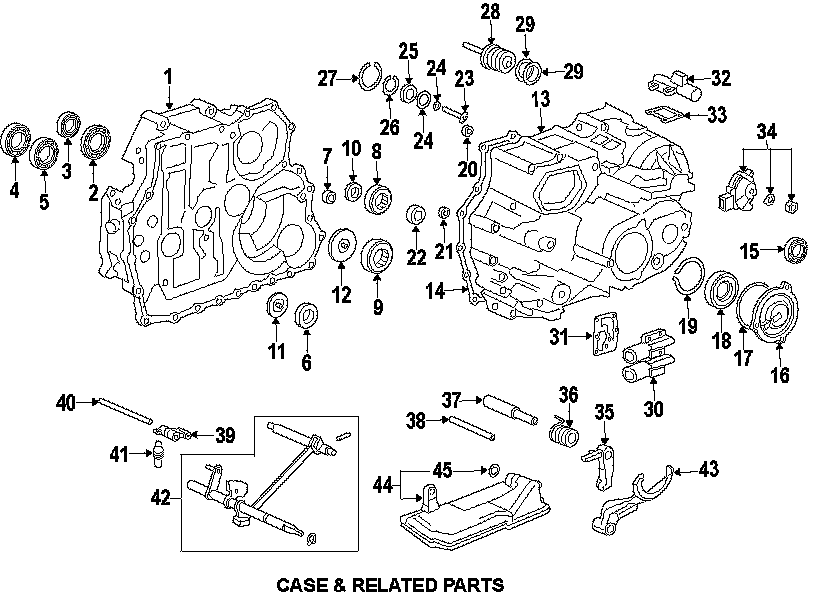
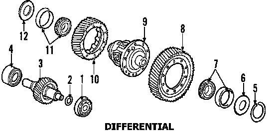
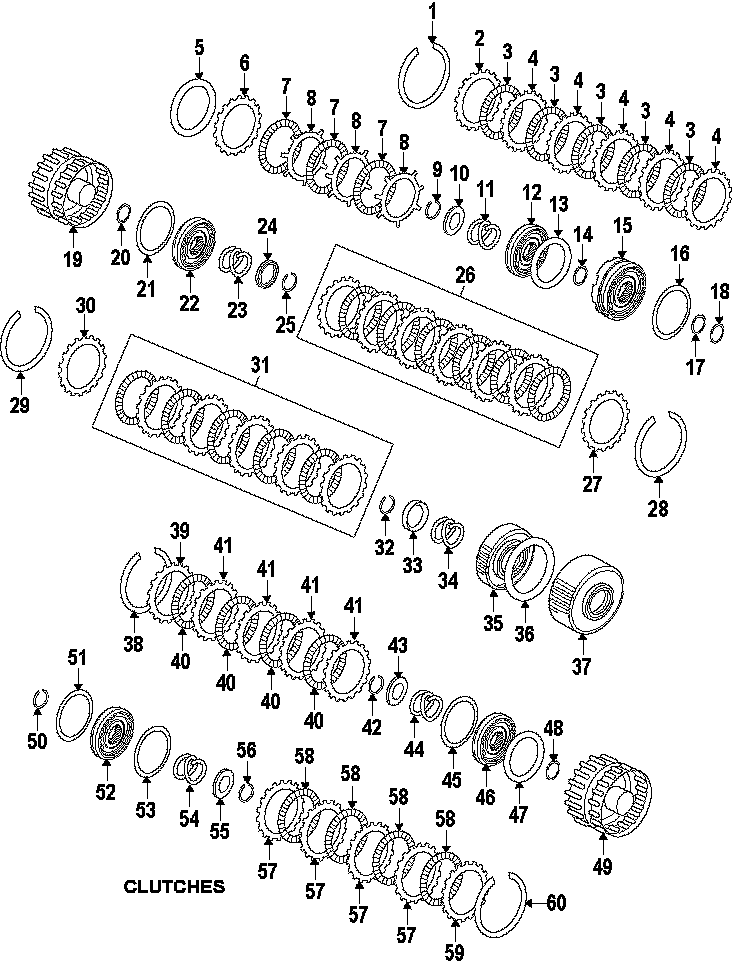
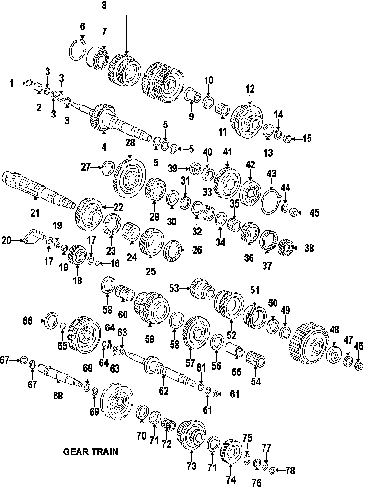
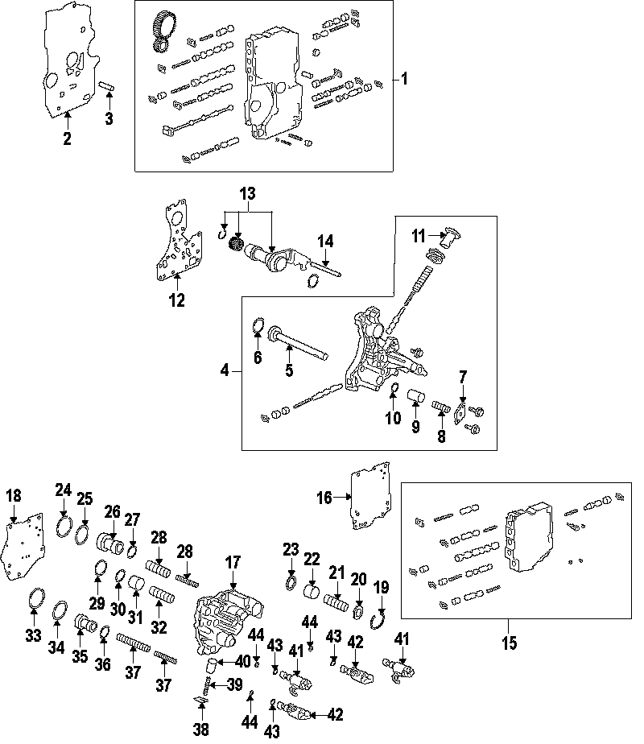

Operation CHARM
: Car repair manuals for everyone.
Home
>>
Acura
>>
2007
>>
MDX V6-3.7L
>>
Parts and Labor
>>
Transmission and Drivetrain
>>
Automatic Transmission/Transaxle
>>
Images
Images
Case & Related Parts:

Differential:

Clutches:

Gear Train:

Valve Body & Related Parts:
